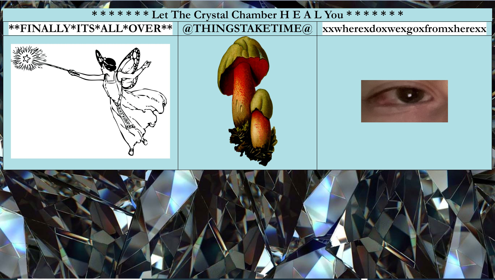
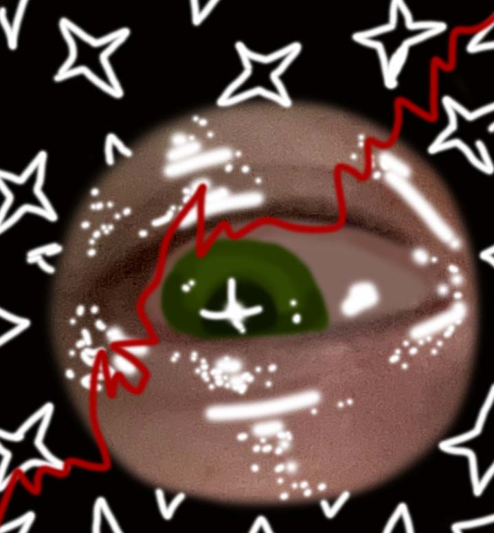

{ net.art Linking Webpage Project: } x click below for access x
*click here to experience the full linking poem*
This is a linking webpage interactive poem aimed at taking the viewer through my personal experiences with retinal detachment and the progressive stages of blindness. It addresses the time before my diagnosis, my experience with surgery and recovery, and the ways in which the alteration of my physical perception impacted my intellectual and artistic perception.


